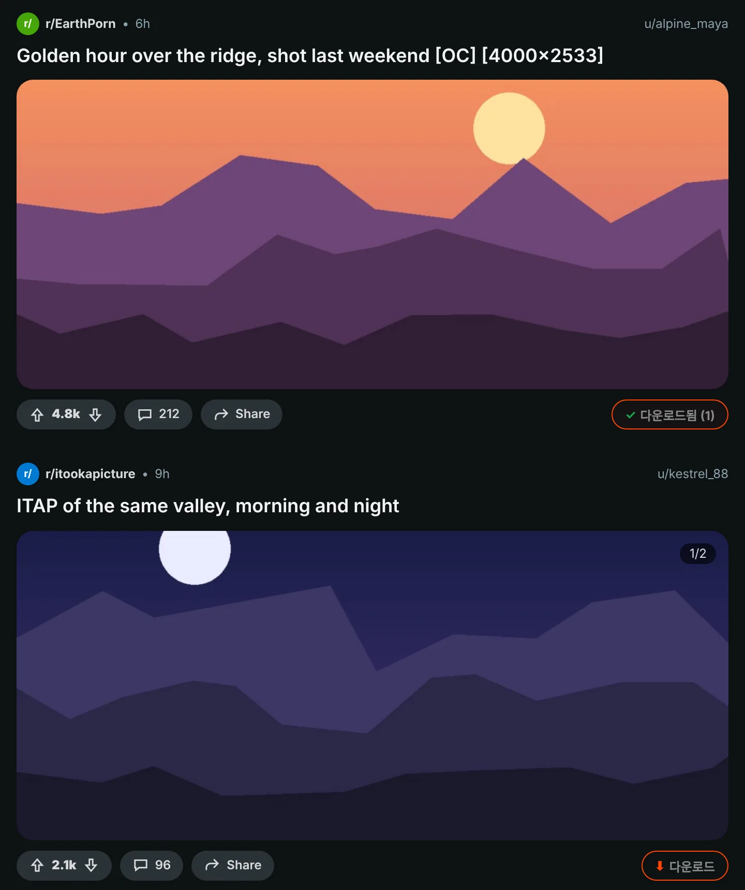
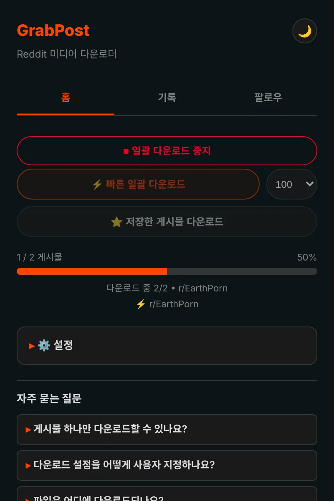
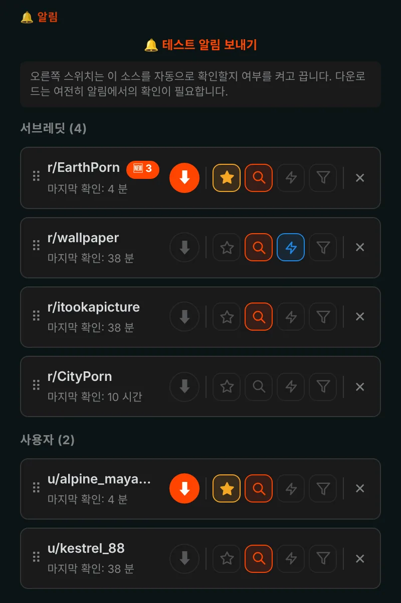
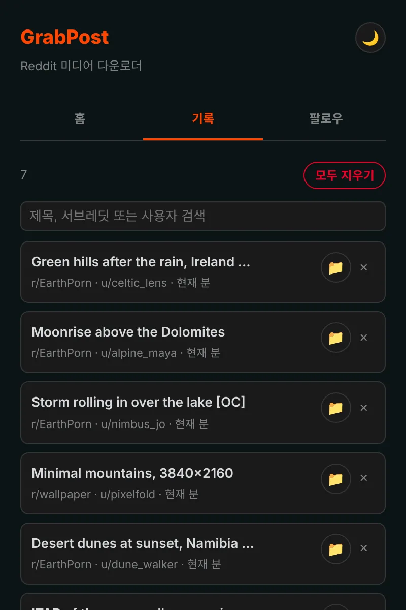

Reddit의 무엇이든 한 번의 클릭으로 저장하세요.
GrabPost는 모든 Reddit 게시물에 다운로드 버튼을 달아 줍니다. 동영상은 소리와 함께, 갤러리는 빠짐없이 저장되고, 다른 일을 하는 동안 서브레딧이나 프로필 전체가 다운로드됩니다. 무료이며 추적하지 않습니다.
아직 스토어에는 없습니다. GitHub에서 설치하는 데 1분 정도 걸립니다.

게시물의 버튼을 눌러 보세요.
모든 게시물에 버튼 하나
주황색 버튼은 각 게시물의 투표·공유 줄에 있습니다. 피드, 프로필, 검색 결과는 물론 새 Reddit과 옛 Reddit 모두에서 동작합니다. 이미지, 갤러리, GIF, Redgifs, Imgur 링크를 지원합니다. Alt+Shift+D를 누르면 화면 가운데 게시물을 다운로드합니다.

페이지 전체를 한 번에
빠른 모드는 서브레딧, 프로필, 멀티레딧, 검색 결과를 Reddit 데이터에서 바로 읽기 때문에 스크롤할 필요가 없습니다. 이미 가진 것은 건너뛰고, 예전에 받은 게시물에 닿으면 멈춥니다. 저장한 게시물도 같은 방식으로 다운로드됩니다.

팔로우하면 새 게시물이 찾아옵니다
서브레딧과 사용자를 팔로우하면 새 미디어가 올라올 때 알림을 받거나, 알아서 다운로드되게 할 수 있습니다. 미디어 종류, NSFW, 키워드로 걸러 낼 수 있습니다. 즐겨찾기는 최대 10개까지, 최소 5분 간격으로 확인할 수 있습니다.

모든 다운로드를 기억합니다
기록에는 저장한 항목이 검색창과 함께 표시되고, 이미 가진 게시물은 Reddit에서 표시됩니다. 백업이 자동으로 만들어지므로 다시 설치해도 목록이 지워지지 않습니다.

세세한 부분까지 챙겼습니다
소리 있는 동영상
Reddit은 소리를 별도 파일로 보관합니다. GrabPost가 이를 찾아 브라우저 안에서 합쳐 줍니다.
폴더 이름도 파일 이름도 마음대로
폴더는 {subreddit}/{user}, 파일은 {date}_{title} 같은 템플릿으로 정할 수 있습니다.
중복 없음
누군가 다른 서브레딧에 다시 올린 같은 사진도 알아봅니다.
IDM과 함께 사용 가능
다운로드 관리자가 파일을 가로채서 폴더 이름을 무시하는 일이 없습니다.
Reddit을 배려합니다
Reddit이 잠시 쉬어 달라고 하면 GrabPost는 요청한 시간만큼 기다렸다가 이어 갑니다.
15개 언어
확장 프로그램도 이 페이지도 여러분의 언어로.
무엇을 받든 그건 여러분의 일입니다
- 분석 없음, 추적 없음, 계정 없음
- Reddit과 그 미디어를 호스팅하는 사이트와만 통신
- 기록과 설정은 브라우저 안에 보관
- GitHub에서 소스 코드 공개
1분이면 설치 완료
GrabPost는 아직 Chrome 웹 스토어에 없어서 직접 설치합니다. Chrome, Edge, Brave, Opera 등 Chromium 기반 브라우저에서 동작합니다.
- GitHub에서 최신 grabpost-v…zip을 받아 계속 보관할 폴더에 압축을 풉니다.
chrome://extensions를 열고 오른쪽 위의 개발자 모드를 켭니다.- 압축해제된 확장 프로그램을 로드합니다를 누르고 압축을 푼 grabpost 폴더를 선택합니다.
- Reddit을 열면 게시물에 주황색 버튼이 나타나고, 툴바 아이콘으로 GrabPost 패널이 열립니다.
업데이트하려면 같은 폴더의 파일을 교체한 뒤 GrabPost 카드의 새로고침 버튼을 누르세요. 설정과 기록은 그대로 남습니다.
Firefox: 부가 기능 스토어 버전을 준비 중입니다. 그전까지는 about:debugging에서 Firefox용 zip을 임시로 불러올 수 있습니다.
자주 묻는 질문
GrabPost는 무료인가요?
네, 모든 기능이 무료입니다. 시간을 아껴 주었다면 개발자에게 커피 한 잔 사 주셔도 됩니다.
파일은 어디에 저장되나요?
브라우저 다운로드 폴더 안, 직접 고른 하위 폴더에 저장됩니다. 기본값은 Reddit Downloads이며 파일 이름은 서브레딧 이름으로 시작합니다.
Reddit에 로그인해야 하나요?
저장한 게시물과 연령 제한 커뮤니티에만 필요합니다. 나머지는 계정 없이 동작합니다.
다시 설치하면 기록이 사라지나요?
아니요. 브라우저 동기화가 켜져 있으면 설정과 팔로우 목록이 저절로 돌아옵니다. 백업 파일도 자동 저장되며, GrabPost는 브라우저 다운로드 목록에서 기록을 다시 만들 수도 있습니다.
Edge, Brave, Opera에서도 되나요?
네. 압축해제된 확장 프로그램을 불러올 수 있는 Chromium 브라우저라면 Chrome용 zip으로 동작합니다.
GrabPost 다운로드
아직 스토어에는 없습니다. GitHub에서 설치하는 데 1분 정도 걸립니다.